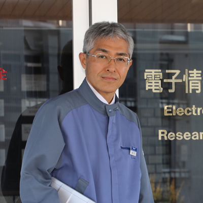

- HOME
- 研究・技術開発
- 未来を拓く研究者・技術者
- 諏訪 充史
リサーチフェロー諏訪 充史

- 所属電子情報材料研究所
- 専門分野電子材料設計
研究に対する想い
社会的なニーズに応える企業研究は、新たな価値を製品として提案し、社会の発展に貢献できるやり甲斐のある仕事です。私が携わっている電子情報材料分野は、製品サイクルが速く、常に新技術に挑戦して製品を生み出し続ける必要があります。決して容易ではありませんが、これを可能とするには、基本原理の継続的追求と直感的ブレイクスルーが鍵となります。これまで、ポリシロキサンやポリイミドなどの機能性ポリマーの極限追求によって3０以上の製品を産み出し、半導体、ディスプレイ、スマートフォン等に使われてきました。今後もスマート社会の到来に向けて、革新的な機能材料を生み出し続けるNew value creatorとなれるよう、感覚を研ぎ澄まして研究に取り組み続けたいと思います。
主な論文
| 2003年 | J. Photopolym. Sci & Technol. 221, 16 (2003) |
|---|---|
| 2011年 | High Performance Polymers. 66, 23 (2011) |
| J. Photopolym. Sci & Technol. 259, 24 (2011) | |
| 2012年 | 電子ジャーナル別冊 「2012 イメージセンサ＆カメラモジュール」 |
| 2019年 | セラミック 6, 54(2019) |
| 化学と工業 72-3, 233(2019) | |
| J. Photopolym. Sci & Technol., 32(3), 485(2019) | |
| J. Photopolym. Sci & Technol., 32(4), 665(2019) | |
| 2020年 | J. Photopolym. Sci & Technol., 33(5), 569(2020) |
主な論文
| 2009年 | 第58 回日本化学会 化学技術賞 |
|---|---|
| 2013年 | 近畿地方発明表彰 文部科学大臣発明奨励賞 |
| 2018年 | 第67回 日本化学会 化学技術賞 |
| 第73回 日本セラミックス協会 技術賞 |